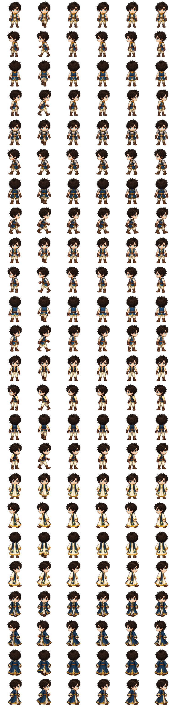
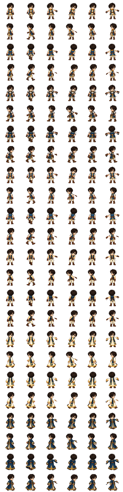
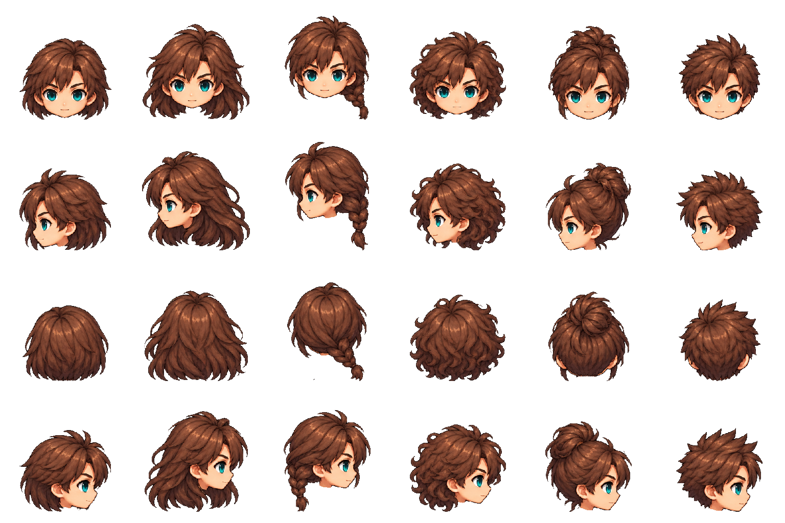
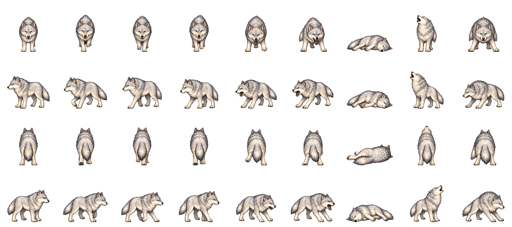
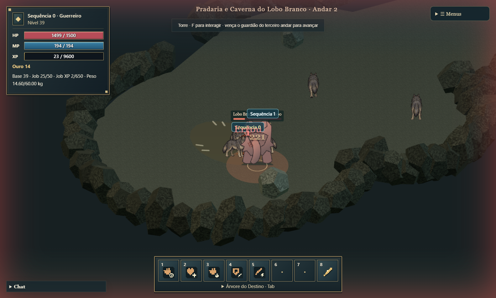
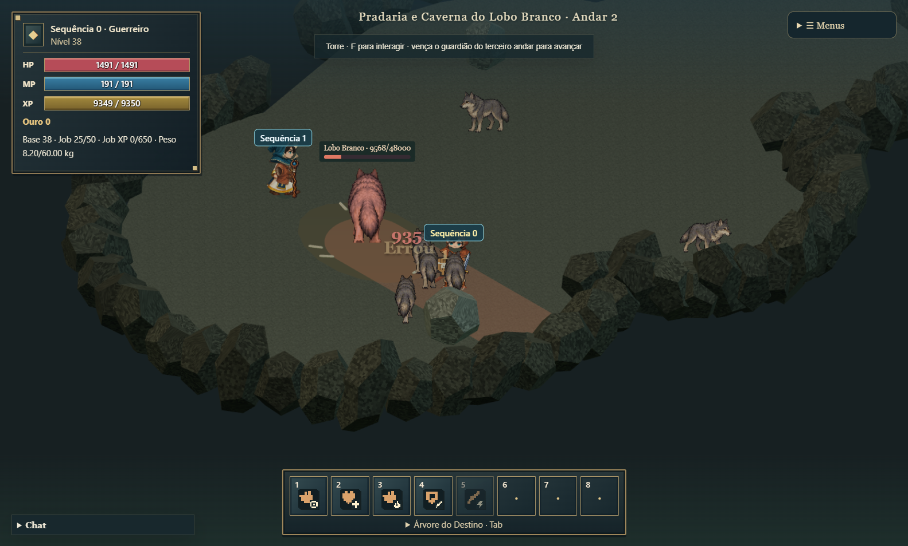

Dungeon Teacher · Iteração 36
Sequências do renderizador real, comparação com o estado anterior e capturas de dois clientes conectados ao serviço ADM. Os controles abaixo apenas percorrem evidências salvas; não alteram o jogo.
Corpo, equipamento e ataque
12 pranchas e 1.536 quadros: seis classes, dois corpos, quatro famílias de armas, quatro direções e oito estados. Cabelo cacheado no corpo masculino e trança no feminino. Colete, botas e mochila tornam visível o acompanhamento das camadas. Adagas duplas usam a segunda lâmina.
Abrir prancha completa
Reprodução lenta para inspeção.
Não representa a duração do cooldown.
A conjuração é uma pose de apresentação;
as restrições de habilidade continuam no servidor. Antes e depois
Mesma base de classe, aparência e direção. No estado anterior, a seleção corporal permanecia em repouso durante o ataque modular. Na versão 36, preparação, impacto e recuperação modificam tronco e braços. Estas pranchas mostram somente o corpo composto, sem a arma separada.

Antes · compositor preservado na cópia de referência.
Depois · compositor e poses da Iteração 36.Cabelos e identidade das classes
Seis silhuetas novas em quatro direções: médio reto, longo, trança, cacheado, coque e crista. Os três modelos antigos continuam disponíveis. Os novos rostos usam expressão neutra.

Atlas adicional; arte gerada com referência ao estilo existente, organizada pelo empacotador do projeto.Ver as seis classes sem armadura sobreposta
Lobo Branco: identidade e habilidades
Atlas novo com 36 quadros, criado com o lobo comum como referência. A fúria mantém sua coloração avermelhada. Estatísticas, ataques e tempos do encontro foram preservados.

Nove quadros em quatro direções; original e metadados preservados no projeto.
Antes: MVP geométrico em fúria, durante o primeiro ensaio.
Depois: novo sprite, fúria e corredor da carga dentro da caverna. São momentos distintos de teste, não o mesmo quadro.Percurso online e aplicativos empacotados
Inventário, compra/equipamento, forja, mineração, habilidade, exploração dos andares 1–3, MVP e lápide. A sequência inclui capturas do ensaio de ADM/Aluno com recursos extraídos dos pacotes.

Evidência de execução local em Electron, com TLS e bases temporárias. Perfis e posições de alguns cenários foram preparados pelo ensaio. Morte, fúria, recuperação dos participantes e relógio do MVP foram controlados fora do cliente. Não é validação de 32 computadores físicos. Consulte o relatório para resultados e limitações.